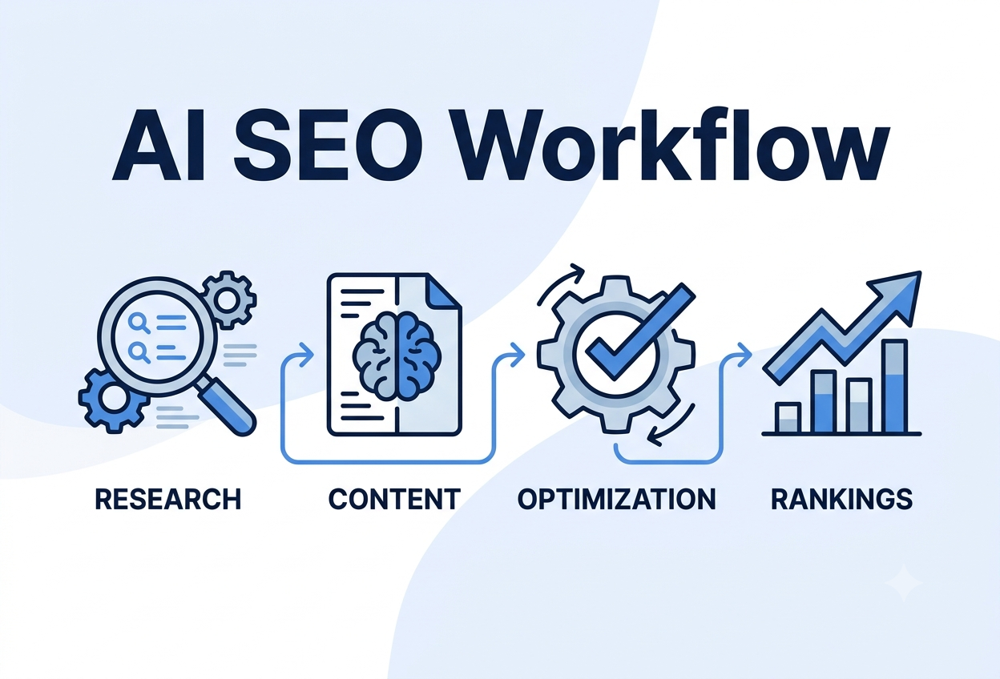

Actionable SEO strategies, AI insights, and practical guides to help your business grow.

If you have ever spent a full day on keyword research, only to spend another day writing an outline and a third day fixing meta tags, you already know why an AI SEO workflow has become one of the most searched topics among marketers this year. An AI SEO workflow is not about letting a chatbot write your content and hitting publish. It is a structured system where AI handles the repetitive research and drafting work, while you keep control of strategy, accuracy, and quality. Done correctly, it can cut your production time in half without sacrificing the search rankings you are working toward.
In this guide, you will get a complete, step-by-step AI SEO workflow you can start using this week, along with the mistakes that trip up most beginners and the trends shaping search in 2026.
An AI SEO workflow is a repeatable process that combines artificial intelligence tools with human strategy to plan, produce, and optimize content that ranks. Instead of treating AI as a one-click content generator, a proper workflow breaks SEO into stages: research, drafting, optimization, publishing, and monitoring. AI accelerates each stage, but a human reviews and refines the output at every checkpoint.
This distinction matters because search engines increasingly reward content that demonstrates real experience and expertise, not just correct keyword placement. An AI SEO workflow is designed to keep that human judgment intact while removing the busywork around it.
Start by identifying your target keyword and its related variations. AI-powered keyword tools can group hundreds of related terms into clusters based on shared search intent within minutes, a task that used to take hours of manual spreadsheet work. Feed your seed keyword into a research tool, export the list, and group the results into three buckets: informational, commercial, and transactional intent.
Before writing anything, analyze what is already ranking. AI tools can summarize the top ten results for your target keyword, flagging common subtopics, average word count, and content gaps competitors have missed. Use this to shape an outline that covers what searchers actually want, not just what you assume they want.
Turn your research into a structured brief: target keyword, secondary keywords, recommended headings, questions to answer, and word count target. A good brief keeps your draft focused and prevents the generic, unstructured output that AI tends to produce without clear direction.
Generate a first draft using your brief as the prompt foundation. Then rewrite sections in your own voice, add real examples, correct anything inaccurate, and insert insights that only someone with direct experience in the topic would know. This step is where most AI-generated content either becomes genuinely useful or gets filtered out by search engines as low-value.
Run the draft through an SEO plugin or optimization tool to check keyword placement, meta title length, header structure, and internal linking opportunities. Confirm the page loads quickly, is mobile-friendly, and has no broken links or missing alt text.
In 2026, ranking on the traditional search results page is only part of the goal. Content also needs to be extractable by AI Overviews, ChatGPT, Perplexity, and Gemini. Use direct answer blocks near the top of sections, question-style subheadings, and clear entity definitions so AI systems can accurately summarize and cite your page.
Publish through your CMS with proper categorization, and link the new content to related pages on your site. Internal linking helps search engines understand your site structure and passes authority to your most important pages, such as service or pricing pages.
Track rankings, organic traffic, and click-through rate over the following weeks. AI reporting tools can summarize performance trends and flag pages that are losing visibility, so you know exactly when a piece needs a content refresh rather than a full rewrite.
Unedited AI output tends to read generically and can contain factual errors. Always add original examples, verify claims, and rewrite sections that sound robotic.
Keyword density means little if the content does not match what the searcher actually wants. Always validate your outline against the current top-ranking pages before drafting.
AI tools cannot confirm live indexation status, real Core Web Vitals data, or actual ranking positions. Always cross-check AI recommendations against Google Search Console and analytics data before making changes.
Not every tool labeled with "AI" adds real value. The most useful tools integrate into your existing workflow and produce actionable insight, rather than simply repackaging data you already had access to.
Focusing exclusively on traditional rankings while ignoring how AI answer engines summarize content means missing a growing share of search visibility.
Search leadership has been clear that AI search and traditional SEO are not separate disciplines; the same fundamentals of helpful, expert content that have always mattered continue to determine visibility, even as AI systems summarize and surface that content differently. A few shifts worth building into your workflow this year:
Building an AI SEO workflow from scratch takes trial and error most business owners do not have time for. At AlgorithmOptix IT, we handle the entire system for you, combining AI-driven research and automation with hands-on strategy so your content ranks on Google and shows up in AI-generated answers.
Here is what working with us looks like:
If you want an AI SEO workflow running for your business without the learning curve, get your free SEO audit and we will show you exactly where the opportunities are.
An effective AI SEO workflow is not about replacing strategy with automation. It is about using AI to remove the repetitive parts of SEO, research, drafting, technical checks, and reporting, so more of your time goes into the work that actually moves rankings: original insight, accuracy, and genuine expertise. Start small: automate your keyword clustering and content briefs first, keep a human editing every draft, and structure your content for both Google and AI answer engines. Build that habit consistently, and the ranking gains follow.
Book your FREE SEO Audit with Algorithm Optix IT.
Book Free SEO Audit